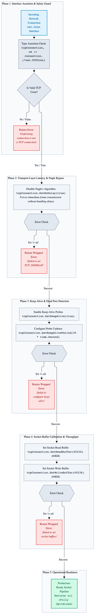
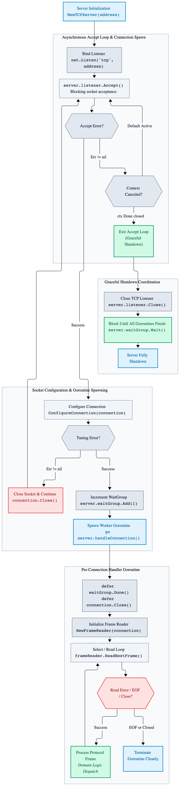
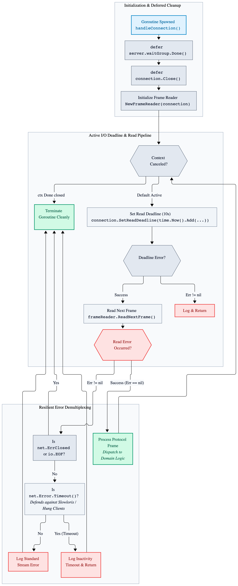
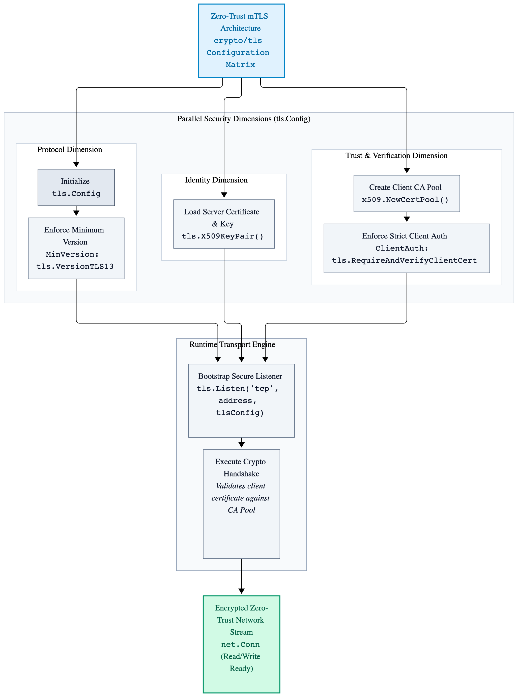
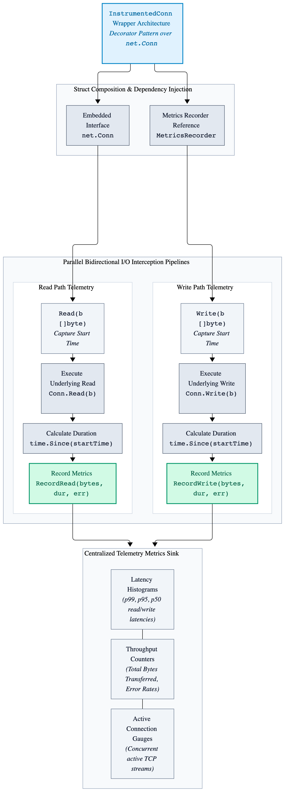

Advanced Networking Programming
Welcome to Chapter 7 of the Go Systems Blueprint. Building upon the systems I/O primitives and binary serialization workflows examined in Chapter 6, advanced network engineering requires explicit control over transport-layer socket behaviors.
This chapter covers transport tuning, concurrent TCP servers, enforced I/O deadlines, low-level socket control hooks, transport-layer security via mTLS, and instrumented telemetry wrappers.
7.1 Configuring Socket Options for Low Latency
By default, TCP stacks use Nagle's algorithm (TCP_NODELAY disabled) to combine small outgoing packets
into larger segments, reducing packet overhead at the cost of latency. For real-time binary protocols and low-latency
RPC frameworks, infrastructure engineers explicitly disable Nagle's algorithm and configure keep-alives.
package main
import (
"errors"
"fmt"
"net"
"time"
)
// ConfigureConnection applies production-grade socket options to optimize throughput and latency.
func ConfigureConnection(connection net.Conn) error {
// Defensively check if the connection is nil.
if connection == nil {
return errors.New("error: network connection cannot be nil")
}
tcpConnection, ok := connection.(*net.TCPConn)
if !ok {
return fmt.Errorf("underlying connection is not a TCP connection")
}
// Disable Nagle's algorithm (TCP_NODELAY enabled) to send small packets immediately without buffering delays.
if err := tcpConnection.SetNoDelay(true); err != nil {
return fmt.Errorf("failed to set TCP_NODELAY: %w", err)
}
// Enable TCP keep-alive probes to detect dead client connections proactively.
if err := tcpConnection.SetKeepAlive(true); err != nil {
return fmt.Errorf("failed to enable TCP keep-alive: %w", err)
}
if err := tcpConnection.SetKeepAlivePeriod(30 * time.Second); err != nil {
return fmt.Errorf("failed to set keep-alive period: %w", err)
}
// Set read and write buffer sizes to match high-throughput workload requirements.
if err := tcpConnection.SetReadBuffer(65536); err != nil {
return fmt.Errorf("failed to set socket read buffer: %w", err)
}
if err := tcpConnection.SetWriteBuffer(65536); err != nil {
return fmt.Errorf("failed to set socket write buffer: %w", err)
}
return nil
}Figure 7.1: TCP Socket Tuning and Connection Lifecycle Architecture

7.2 Concurrent TCP Server Architecture
Handling thousands of concurrent connections requires an asynchronous accept loop coupled with dedicated per-connection goroutines or worker pools. The following implementation demonstrates a production TCP listener skeleton with connection tuning and resource cleanup.
package main
import (
"context"
"errors"
"fmt"
"io"
"log"
"net"
"sync"
)
// TCPServer manages incoming network connections and coordinates graceful shutdowns.
type TCPServer struct {
listener net.Listener
waitGroup sync.WaitGroup
}
// NewTCPServer initializes a TCP listener on the specified network address.
func NewTCPServer(serverAddress string) (*TCPServer, error) {
// Defensively check if the server address string is empty.
if serverAddress == "" {
return nil, errors.New("error: server address cannot be empty")
}
tcpListener, err := net.Listen("tcp", serverAddress)
if err != nil {
return nil, fmt.Errorf("failed to bind TCP listener on %s: %w", serverAddress, err)
}
return &TCPServer{
listener: tcpListener,
}, nil
}
// Start begins accepting incoming client connections in the background.
func (server *TCPServer) Start(serverContext context.Context) {
// Defensively check if the server context is nil.
if serverContext == nil {
return
}
for {
clientConnection, acceptError := server.listener.Accept()
if acceptError != nil {
// If the listener was closed during a graceful shutdown, exit the accept loop cleanly.
if errors.Is(acceptError, net.ErrClosed) {
return
}
select {
case <-serverContext.Done():
// Server is shutting down normally via context cancellation; exit accept loop.
return
default:
log.Printf("failed to accept incoming connection: %v", acceptError)
continue
}
}
// Apply socket tuning options immediately upon acceptance.
if configurationError := ConfigureConnection(clientConnection); configurationError != nil {
log.Printf("failed to configure socket options: %v", configurationError)
clientConnection.Close()
continue
}
server.waitGroup.Add(1)
go server.handleConnection(serverContext, clientConnection)
}
}
// handleConnection processes client read/write lifecycles within an isolated goroutine.
func (server *TCPServer) handleConnection(serverContext context.Context, clientConnection net.Conn) {
defer server.waitGroup.Done()
defer clientConnection.Close()
// Initialize the buffered frame reader for binary protocol demultiplexing.
frameReader, readerError := NewFrameReader(clientConnection)
if readerError != nil {
log.Printf("failed to initialize frame reader: %v", readerError)
return
}
for {
select {
case <-serverContext.Done():
return
default:
protocolFrame, readError := frameReader.ReadNextFrame()
if readError != nil {
if errors.Is(readError, net.ErrClosed) || errors.Is(readError, io.EOF) {
return
}
log.Printf("stream read error: %v", readError)
return
}
// Process incoming structured protocol frame.
_ = protocolFrame
}
}
}
// Close gracefully stops the server and waits for active connections to finish.
func (server *TCPServer) Close() error {
// Defensively check if the server instance or its listener is nil.
if server == nil || server.listener == nil {
return errors.New("error: tcp server instance or listener is nil")
}
if err := server.listener.Close(); err != nil {
return fmt.Errorf("failed to close listener: %w", err)
}
// Block execution until all active connection handling goroutines complete.
server.waitGroup.Wait()
return nil
}Figure 7.2: Concurrent TCP Server Architecture

7.3 Enforcing Active I/O Deadlines
Relying solely on TCP keep-alives is insufficient for detecting hung clients, stalled writes, or slowloris-style denial-of-service vectors. Production servers must enforce strict read and write deadlines inside the connection handling loop to prevent goroutine leaks.
// handleConnection processes client read/write lifecycles within an isolated goroutine with enforced deadlines.
func (server *TCPServer) handleConnection(serverContext context.Context, clientConnection net.Conn) {
// Defensively ensure wait group counter decrements and connection closes on exit.
defer server.waitGroup.Done()
defer clientConnection.Close()
// Initialize the buffered frame reader for binary protocol demultiplexing.
frameReader, readerError := NewFrameReader(clientConnection)
if readerError != nil {
log.Printf("failed to initialize frame reader: %v", readerError)
return
}
for {
select {
case <-serverContext.Done():
return
default:
// Enforce a strict read activity deadline to prevent slowloris attacks and hung connections.
if deadlineError := clientConnection.SetReadDeadline(time.Now().Add(10 * time.Second)); deadlineError != nil {
log.Printf("failed to set read deadline: %v", deadlineError)
return
}
protocolFrame, readError := frameReader.ReadNextFrame()
if readError != nil {
if errors.Is(readError, net.ErrClosed) || errors.Is(readError, io.EOF) {
return
}
// Check if the read failure was caused by a socket timeout expiration.
var networkError net.Error
if errors.As(readError, &networkError) && networkError.Timeout() {
log.Printf("client connection timed out due to read inactivity")
return
}
log.Printf("stream read error: %v", readError)
return
}
// Enforce a strict write deadline before responding or echoing back to the client.
if deadlineError := clientConnection.SetWriteDeadline(time.Now().Add(5 * time.Second)); deadlineError != nil {
log.Printf("failed to set write deadline: %v", deadlineError)
return
}
// Echo or process the valid structured protocol frame.
_ = protocolFrame
}
}
}Figure 7.3: Enforcing Active I/O Deadlines

7.4 Advanced Listener Control Via net.ListenConfig
Standard net.Listen hides low-level socket configuration hooks. For zero-downtime rolling deployments
and high-performance kernel tuning (such as setting SO_REUSEADDR, SO_REUSEPORT,
or adjusting listener backlog queues beyond SOMAXCONN), infrastructure engineers use net.ListenConfig
with a custom Control callback.
package main
import (
"context"
"errors"
"fmt"
"net"
"syscall"
)
// CreateListenerWithControl initializes a listener with custom kernel socket control hooks for socket reuse and high-performance binding.
func CreateListenerWithControl(serverContext context.Context, serverAddress string) (net.Listener, error) {
// Defensively check if the server context is nil.
if serverContext == nil {
return nil, errors.New("error: server context cannot be nil")
}
// Defensively check if the server address string is empty.
if serverAddress == "" {
return nil, errors.New("error: server address cannot be empty")
}
listenConfigurations := net.ListenConfig{
Control: func(network string, address string, rawConn syscall.RawConn) error {
var systemControlError error
// Access the underlying raw file descriptor safely via rawConn.Control.
controlError := rawConn.Control(func(fileDescriptor uintptr) {
// Convert the file descriptor uintptr to an integer for syscall operations.
socketFileDescriptor := int(fileDescriptor)
// Enable SO_REUSEADDR to allow immediate rebinding to ports currently in TIME_WAIT state.
if err := syscall.SetsockoptInt(socketFileDescriptor, syscall.SOL_SOCKET, syscall.SO_REUSEADDR, 1); err != nil {
systemControlError = fmt.Errorf("failed to set SO_REUSEADDR: %w", err)
return
}
// Enable SO_REUSEPORT to allow multiple sockets to bind to the identical port for kernel-level load balancing.
if err := syscall.SetsockoptInt(socketFileDescriptor, syscall.SOL_SOCKET, syscall.SO_REUSEPORT, 1); err != nil {
systemControlError = fmt.Errorf("failed to set SO_REUSEPORT: %w", err)
return
}
})
if controlError != nil {
return fmt.Errorf("failed to execute raw socket control callback: %w", controlError)
}
return systemControlError
},
}
// Bind and return the configured TCP listener using the custom listen configuration.
tcpListener, listenError := listenConfigurations.Listen(serverContext, "tcp", serverAddress)
if listenError != nil {
return nil, fmt.Errorf("failed to bind listener on address %s: %w", serverAddress, listenError)
}
return tcpListener, nil
}7.5 Securing the Transport Layer with Mutual TLS (mTLS)
Production network services rarely expose raw unencrypted TCP streams. Integrating Transport Layer Security (TLS)
via Go's crypto/tls package—while enforcing strict cipher suites, minimum TLS versions, and mutual client
certificate authentication (RequireAndVerifyClientCert)—is critical for zero-trust infrastructure.
Key Concepts: Configuring tls.Config, setting MinVersion: tls.VersionTLS13,
managing custom certificate pools, and wrapping raw connections or using tls.Listen.
Figure 7.5: Securing the Transport Layer with Mutual TLS (mTLS)

7.6 Instrumented Telemetry Wrappers (InstrumentConn)
To monitor production network health without cluttering core connection handlers, systems engineers use decorator/wrapper
patterns around net.Conn. By implementing a custom InstrumentedConn struct that wraps net.Conn,
you can transparently record Prometheus metrics for active connection gauges, total bytes transferred, and read/write latencies.
package main
import (
"errors"
"io"
"net"
"sync/atomic"
"time"
)
// MetricsRecorder defines the interface for recording transport-layer telemetry and metrics.
type MetricsRecorder interface {
RecordRead(bytesRead int, operationDuration time.Duration, readError error)
RecordWrite(bytesWritten int, operationDuration time.Duration, writeError error)
RecordConnectionOpened()
RecordConnectionClosed()
}
// DefaultMetricsRecorder provides a thread-safe, mockable implementation of MetricsRecorder using atomic counters.
type DefaultMetricsRecorder struct {
activeConnections int64
totalBytesRead int64
totalBytesWritten int64
}
// RecordRead increments the total bytes read counter.
func (recorder *DefaultMetricsRecorder) RecordRead(bytesRead int, operationDuration time.Duration, readError error) {
if readError == nil && bytesRead > 0 {
atomic.AddInt64(&recorder.totalBytesRead, int64(bytesRead))
}
}
// RecordWrite increments the total bytes written counter.
func (recorder *DefaultMetricsRecorder) RecordWrite(bytesWritten int, operationDuration time.Duration, writeError error) {
if writeError == nil && bytesWritten > 0 {
atomic.AddInt64(&recorder.totalBytesWritten, int64(bytesWritten))
}
}
// RecordConnectionOpened increments the active connection gauge.
func (recorder *DefaultMetricsRecorder) RecordConnectionOpened() {
atomic.AddInt64(&recorder.activeConnections, 1)
}
// RecordConnectionClosed decrements the active connection gauge.
func (recorder *DefaultMetricsRecorder) RecordConnectionClosed() {
atomic.AddInt64(&recorder.activeConnections, -1)
}
// InstrumentedConn wraps net.Conn to transparently capture transport-layer metrics for reads, writes, and connection lifecycles.
type InstrumentedConn struct {
net.Conn
metricsRecorder MetricsRecorder
}
// NewInstrumentedConn initializes an instrumented connection wrapper and records the open event.
func NewInstrumentedConn(underlyingConnection net.Conn, recorder MetricsRecorder) (*InstrumentedConn, error) {
// Defensively check if the underlying connection is nil.
if underlyingConnection == nil {
return nil, errors.New("error: underlying network connection cannot be nil")
}
// Defensively check if the metrics recorder is nil.
if recorder == nil {
return nil, errors.New("error: metrics recorder cannot be nil")
}
recorder.RecordConnectionOpened()
return &InstrumentedConn{
Conn: underlyingConnection,
metricsRecorder: recorder,
}, nil
}
// Read wraps the underlying connection read operation to record latency and throughput telemetry.
func (instrumentedConnection *InstrumentedConn) Read(destinationBuffer []byte) (bytesRead int, readError error) {
// Defensively check if the connection wrapper or recorder is nil.
if instrumentedConnection == nil || instrumentedConnection.metricsRecorder == nil {
return 0, errors.New("error: instrumented connection or recorder is nil")
}
operationStartTime := time.Now()
bytesRead, readError = instrumentedConnection.Conn.Read(destinationBuffer)
operationDuration := time.Since(operationStartTime)
// Record read metrics ignoring normal EOF status.
if readError == nil || errors.Is(readError, io.EOF) {
instrumentedConnection.metricsRecorder.RecordRead(bytesRead, operationDuration, readError)
} else {
instrumentedConnection.metricsRecorder.RecordRead(bytesRead, operationDuration, readError)
}
return bytesRead, readError
}
// Write wraps the underlying connection write operation to record latency and throughput telemetry.
func (instrumentedConnection *InstrumentedConn) Write(sourceBuffer []byte) (bytesWritten int, writeError error) {
// Defensively check if the connection wrapper or recorder is nil.
if instrumentedConnection == nil || instrumentedConnection.metricsRecorder == nil {
return 0, errors.New("error: instrumented connection or recorder is nil")
}
operationStartTime := time.Now()
bytesWritten, writeError = instrumentedConnection.Conn.Write(sourceBuffer)
operationDuration := time.Since(operationStartTime)
instrumentedConnection.metricsRecorder.RecordWrite(bytesWritten, operationDuration, writeError)
return bytesWritten, writeError
}
// Close wraps the underlying connection close operation to decrement the active connection gauge.
func (instrumentedConnection *InstrumentedConn) Close() error {
// Defensively check if the connection wrapper or recorder is nil.
if instrumentedConnection == nil || instrumentedConnection.metricsRecorder == nil {
return errors.New("error: instrumented connection or recorder is nil")
}
closeError := instrumentedConnection.Conn.Close()
instrumentedConnection.metricsRecorder.RecordConnectionClosed()
return closeError
}Figure 7.6: Advanced Instrumented Telemetry Wrappers

7.7 Optimizing Handshakes with TCP Fast Open (TFO)
For high-frequency RPC clients and low-latency microservices, the standard 3-way TCP handshake adds an unavoidable round-trip time (RTT) penalty before data transmission begins. Enabling TCP Fast Open allows data to be sent in the SYN packet.
Key Takeaways
-
Socket Tuning: Explicitly configure
TCP_NODELAY, keep-alives, and buffer sizes to optimize real-time binary transport performance. -
Graceful Accept Loops: Combine non-blocking listener loops with
sync.WaitGroupand context cancellation to coordinate clean server shutdowns. - Active I/O Deadlines: Enforce strict read and write timeouts on active sockets to defend against slowloris attacks and prevent orphaned goroutine leaks.
-
Low-Level Control Hooks: Use
net.ListenConfigwith custom syscall control callbacks to configure kernel-level options likeSO_REUSEPORT. - Zero-Trust mTLS: Secure network boundaries by enforcing TLS 1.3 and mutual client certificate authentication.
-
Decorator Telemetry: Wrap
net.Conninterfaces transparently to capture comprehensive transport metrics without polluting core business logic.